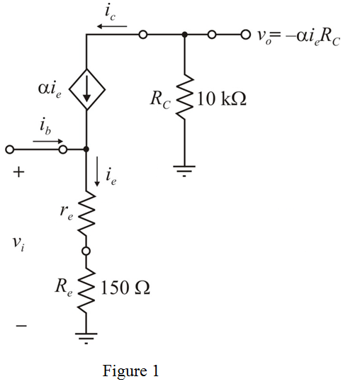
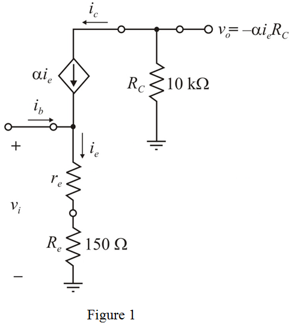
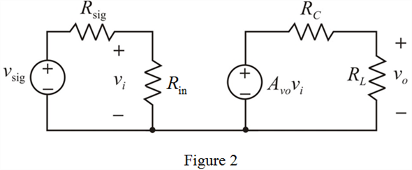

A common emitter (CE) amplifier has a transistor with  biased at and has a collector resistance, and a resistance connected to the emitter.
biased at and has a collector resistance, and a resistance connected to the emitter.
The small-signal equivalent circuit of the CE amplifier is shown in Figure 1.

A common emitter (CE) amplifier has a transistor with biased at and has a collector resistance, and a resistance connected to the emitter.
The small-signal equivalent circuit of the CE amplifier is shown in Figure 1.

Apply Kirchhoff’s current law to the circuit shown in Figure 1.
…… (1)
From Figure 1, the expression for emitter current is,
Substitute for
for  in equation (1), to derive the expression for input resistance of the amplifier.
in equation (1), to derive the expression for input resistance of the amplifier.
…… (2)
Determine the value of emitter small-signal resistance.
Substitute  for
for  ,
,  for
for  and for
and for  in the equation.
in the equation.

Substitute for
for  , for
, for  and
and  for
for  in equation (2).
in equation (2).
Thus, the value of input resistance of the amplifier,  is.
is.
Write the expression for output voltage of the amplifier.
Substitute  for
for  , and
, and  for
for  ,, for
,, for  and for
and for  in the equation.
in the equation.
Thus, the value of open loop voltage gain of the amplifier,  is, .
is, .
Determine the value of output resistance.
In open loop, the output resistance  is equal to the collector resistance.
is equal to the collector resistance.
Thus, the output resistance of the amplifier,  is
is .
.
The signal source  with resistance
with resistance  is connected to the amplifier and a load resistance
is connected to the amplifier and a load resistance  also connected to the amplifier.
also connected to the amplifier.
The modified circuit diagram for small-signal amplifier circuit is shown in Figure 2.

From Figure 2, the expression for output voltage is,
Substitute for ,  for
for  , and for
, and for  in voltage gain equation.
in voltage gain equation.
Thus, the value of voltage gain after connecting the load resistance, is.
is.
Determine the value of overall voltage gain of the amplifier.
Substitute  for
for  , for
, for  ,
,  for
for  ,
,  for
for  , and
, and  for
for  ,
,  for
for  and for
and for  in the equation.
in the equation.
Thus, the value of overall voltage gain of the amplifier,  is.
is.
Substitute for  ,
,  for
for  and
and  for
for  in the equation.
in the equation.
Thus, the value of maximum allowable peak voltage at the input stage, is.
Determine the value of maximum output voltage appears across the load.
Substitute for  and for in the equation.
and for in the equation.
Thus, the value of maximum peak output voltage across the load, is.